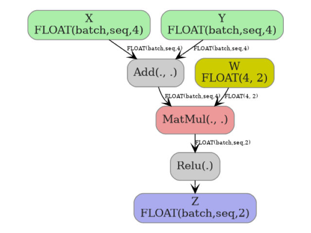

Note
Go to the end to download the full example code.
ONNX Graph Visualization with to_dot#
to_dot converts an
onnx.ModelProto into a DOT
string that can be rendered by Graphviz.
The function:
assigns different fill colors to well-known op-types (
Shape,MatMul,Reshape, …),inlines small scalar constants and 1-D initializers whose length is ≤ 9 directly onto the node label so the graph stays compact,
uses
BasicShapeBuilderto annotate every edge with its inferred dtype and shape (when available),handles
Scan/Loop/Ifsub-graphs by drawing dotted edges for outer-scope values consumed by the sub-graph.
The output is a plain DOT string; it can be saved to a .dot file or passed
to any graphviz renderer (dot -Tsvg, dot -Tpng, …).
import numpy as np
import onnx
import onnx.helper as oh
import onnx.numpy_helper as onh
from yobx.doc import plot_dot
from yobx.helpers.dot_helper import to_dot
TFLOAT = onnx.TensorProto.FLOAT
Build a small model#
The graph performs the following operations:
Add(X, Y)— element-wise sum with shape(batch, seq, d).MatMul(added, W)— project the last dimension tod//2.Relu(Z)— element-wise ReLU activation.
model = oh.make_model(
oh.make_graph(
[
oh.make_node("Add", ["X", "Y"], ["added"]),
oh.make_node("MatMul", ["added", "W"], ["mm"]),
oh.make_node("Relu", ["mm"], ["Z"]),
],
"add_matmul_relu",
[
oh.make_tensor_value_info("X", TFLOAT, ["batch", "seq", 4]),
oh.make_tensor_value_info("Y", TFLOAT, ["batch", "seq", 4]),
],
[oh.make_tensor_value_info("Z", TFLOAT, ["batch", "seq", 2])],
[onh.from_array(np.random.randn(4, 2).astype(np.float32), name="W")],
),
opset_imports=[oh.make_opsetid("", 18)],
ir_version=10,
)
Convert to DOT#
digraph {
graph [rankdir=TB, splines=true, overlap=false, nodesep=0.2, ranksep=0.2, fontsize=8];
node [style="rounded,filled", color="#888888", fontcolor="#222222", shape=box];
edge [arrowhead=vee, fontsize=7, labeldistance=-5, labelangle=0];
I_0 [label="X\nFLOAT(batch,seq,4)", fillcolor="#aaeeaa"];
I_1 [label="Y\nFLOAT(batch,seq,4)", fillcolor="#aaeeaa"];
i_2 [label="W\nFLOAT(4, 2)", fillcolor="#cccc00"];
Add_3 [label="Add(., .)", fillcolor="#cccccc"];
MatMul_4 [label="MatMul(., .)", fillcolor="#ee9999"];
Relu_5 [label="Relu(.)", fillcolor="#cccccc"];
I_0 -> Add_3 [label="FLOAT(batch,seq,4)"];
I_1 -> Add_3 [label="FLOAT(batch,seq,4)"];
Add_3 -> MatMul_4 [label="FLOAT(batch,seq,4)"];
i_2 -> MatMul_4 [label="FLOAT(4, 2)"];
MatMul_4 -> Relu_5 [label="FLOAT(batch,seq,2)"];
O_6 [label="Z\nFLOAT(batch,seq,2)", fillcolor="#aaaaee"];
Relu_5 -> O_6;
}
Display the graph#
plot_dot(dot_src)

Total running time of the script: (0 minutes 0.195 seconds)
Related examples